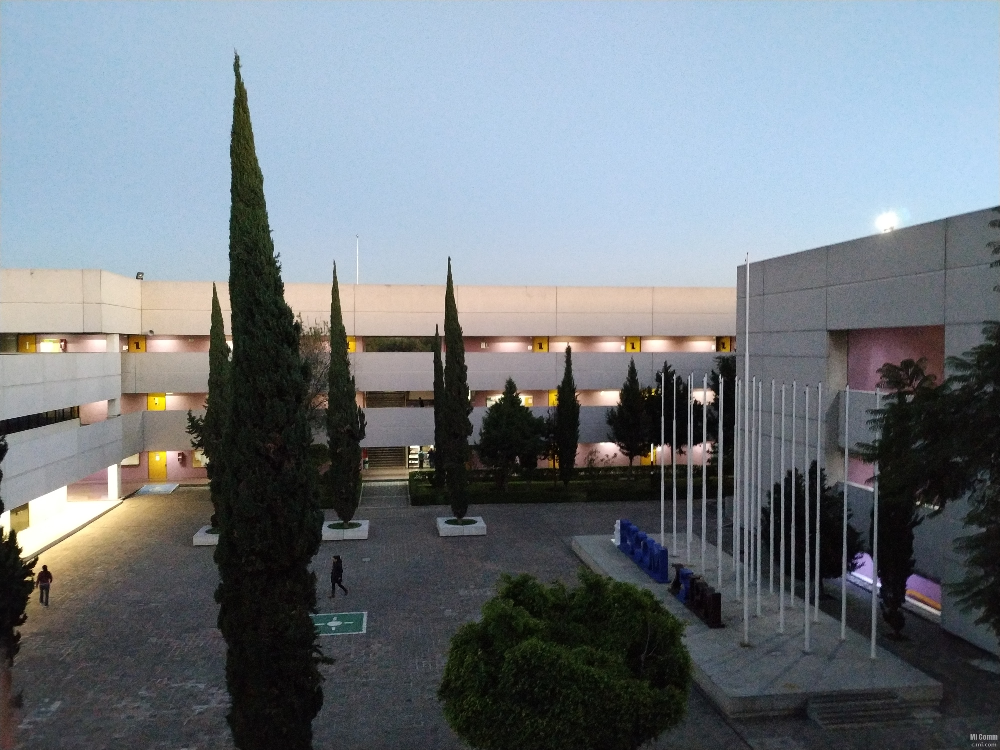

CENDI



Objetivo
Los Centros de Desarrollo Infantil IPN (CENDI) son un servicio que brinda al Instituto Politenico Nacional a su personal académico y administrativo en activo, de tiempo completo y medio tiempo, para la educación integral de sus hijos. Son un verdadero espacio formativo en donde el niño interactúa con su medio ambiente natural y social para permitir la evolución en su desarrollo, dentro de un marco afectivo que propicie desarrollar al máximo sus potencialidades para vivir en condiciones de libertad y dignidad. La labor educativa de los CENDI está encaminada a promover en los niños un crecimiento y maduración, en un universo de interacciones a través de las cuales construyen y asimilan el mundo que les rodea.